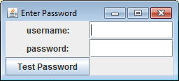
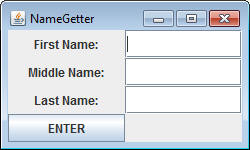
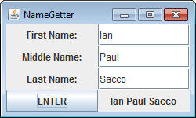
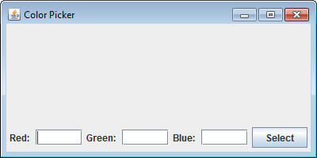
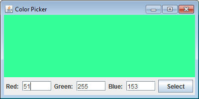

There are a variety of objects made to work with SFrames besides SButtons and SLabels. Consider the following class, which adds two different things to the SFrame; an STextField and an SPasswordField:
import sacco.gui.*;
public class FieldDemo
{
private SFrame frame;
private SButton button;
private STextField userField;
private SPasswordField pwField;
private SLabel userLabel, pwLabel, resultLabel;
public FieldDemo()
{
frame = new SFrame("Enter Password");
userLabel = new SLabel("username:");
userField = new STextField(10); //sets up a text field of size 10
pwLabel = new SLabel("password:");
pwField = new SPasswordField(10); //sets up a password field of size 10
resultLabel = new SLabel("");
button = new SButton("Test Password");
frame.setLayout(new GridLayout(3,2));
frame.add(userLabel);
frame.add(userField);
frame.add(pwLabel);
frame.add(pwField);
frame.add(button);
frame.add(resultLabel);
userField.requestFocus(); //makes it so that the userField starts with the "focus"
frame.pack();
}
public void launch()
{
frame.setVisible(true);
}
}
Run it with the following Runner:
public static void fieldDemo()
{
FieldDemo f = new FieldDemo();
f.launch();
}

It does nothing! Let's add the ButtonListener portion, which uses the getText method that both STextField and SPasswordField use to determine if the username and password are mrsacco and CS123 respectively. Don't forget this is a three step process:
1) Change the header to implement ButtonListener
public class FieldDemo implements ButtonListener
2) In the constructor, addButtonListener(this) to the SButton
button.addButtonListener(this);
3) Add the onButtonPress method to make the compiler happy:
public void onButtonPress(SButton source)
{
String user = userField.getText();
String pw = pwField.getText();
if( user.equals("mrsacco") && pw.equals("CS123"))
{
resultLabel.setText("Access Granted");
resultLabel.setColor(new Color(0,255,0));
}
else
{
resultLabel.setText("Access Denied");
resultLabel.setColor(new Color(255,0,0));
}
}
Assignments:
1) NameGetter: A NameGetter should have the following GUI to start. Note: There is a label on the frame that has no text in it, but will be changed later.

When the button is pressed, use STextField's getText method on all three fields, add them together to create a single String, and then set the remaining label to the full name:

2) ColorPicker: The ColorPicker should start with the following GUI:

When the button is pressed, getText on each of the three values, parse them into ints, and set the background of the frame using the red green and blue values that you just found:
